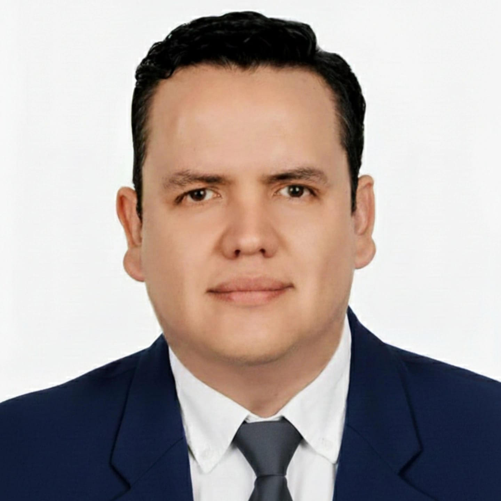

Soy Luis Sánchez Pérez.
Mi formación es jurídica y de políticas públicas: Licenciado en Derecho por la Universidad de Guadalajara, con Maestría en Seguridad Pública y Políticas Públicas; actualmente maestrante en Derechos Humanos y doctorante en Seguridad Pública y Políticas Públicas.
Y lo digo así porque para mí no es una lista de grados: es una forma de trabajar.
- El Derecho me obliga a la legalidad y al debido proceso.
- Las políticas públicas me obligan a no improvisar: a diagnosticar, planear, medir y corregir.
- Los derechos humanos me recuerdan algo esencial: detrás de cada trámite y cada expediente hay personas, y el trato digno también es parte de la integridad.
¿Qué busco para el OIC del TJAJAL?
1. Integridad, Transparencia, Ética y Confianza
Para mí, la integridad, la transparencia y la ética se sostienen con reglas claras, trazabilidad y controles verificables. Y cuando se habla de riesgos de corrupción y de percepción ciudadana, la respuesta institucional tiene que ser completa: prevenir y controlar hacia adentro, y generar confianza hacia afuera con resultados medibles.
Por eso, si la pregunta es qué haría para garantizar transparencia y ética en el actuar, qué acciones tomaría ante riesgos de corrupción, cómo fortalecería el OIC o cómo reconstruiría la confianza ciudadana, mi respuesta se resume en una ruta: decisiones trazables, controles preventivos y rendición de cuentas medible.
1) Transparencia y ética: decisiones trazables
La primera medida es hacer trazable la actuación pública:
- Criterios y formatos base: Para actuaciones sensibles (acuerdos, requerimientos, notificaciones), reduciendo discrecionalidad.
- Control de plazos: Para asegurar oportunidad y continuidad.
- Evidencia mínima obligatoria: En procesos críticos (compras, RRHH, archivos).
2) Prevención y fortalecimiento del OIC
Un OIC funciona mejor cuando opera con lógica preventiva:
- Detección temprana: Mapa de Riesgos Anticorrupción e Integridad para priorizar por impacto.
- Contención inmediata: Ante focos rojos, reforzar controles y ajustar rutas.
- Corrección estructural: Cerrar la causa estandarizando, capacitando y auditando.
3) Código de ética y confianza
Un código de ética efectivo no es el que se difunde; es el que se cumple y se verifica.
- Principios claros: Reglas aterrizadas sobre conflicto de interés y presiones indebidas.
- Cumplimiento exigible: Capacitación, adhesión y consecuencias.
- Confianza y resultados: Canal accesible con folio, plazos de respuesta e indicadores de desempeño.
2. Prevención de faltas administrativas y responsabilidades
Para prevenir actos u omisiones que puedan constituir responsabilidades administrativas, mi propuesta parte de una idea central del Plan de Trabajo 2026–2030: la prevención se construye con reglas claras, cultura institucional y verificación inteligente, para que el riesgo se detecte a tiempo y no se convierta en falta.
1) Prevención por diseño: reglas claras
En los primeros 90 días se generan herramientas para hacer "visible" el riesgo:
- Evaluación del OIC y entorno: Ubicar retrasos y debilidades documentales.
- Mapa de Riesgos: Identificando procesos críticos y priorizando.
- Tablero de Control: Indicadores y metas trimestrales para dar seguimiento verificable.
2) Prevención por conducta: integridad y canales
El personal debe saber qué está permitido, prohibido y qué reportar:
- Programa de Integridad y Ética: Capacitación anual obligatoria y contenidos prácticos sobre conflicto de interés y trato digno.
- Canales seguros de denuncia: Reglas claras de confidencialidad y prevención de represalias.
- Verificación de manuales: Mantener actualizados manuales de organización y perfiles de puestos.
3) Prevención por verificación: auditoría inteligente
Para que la prevención sea real, tiene que haber verificación continua:
- Auditoría enfocada a riesgos: Seguimiento de observaciones con evidencia.
- Inspección permanente: En procesos críticos (archivos, compras, acceso a la información).
- Declaraciones: Patrimoniales, fiscales y de conflicto de interés, con verificación por riesgo.
3. Recursos indispensables y austeridad
Para que el Órgano Interno de Control ejerza sus atribuciones y fortalezca el control interno del Tribunal, los recursos indispensables son cruciales. Austeridad no es parálisis; es disciplina del gasto con evidencia, seguimiento verificable y medición.
1) Recursos Indispensables (Humanos y Herramientas)
- Capacidades humanas especializadas: Asegurar perfiles clave para auditoría, investigación, sustanciación y soporte técnico-administrativo.
- Herramientas de control documental: Control de términos, seguimiento de expedientes y repositorio documental en cumplimiento con la Ley de Archivos.
2) Recursos Indispensables (Acceso y Capacitación)
- Acceso oportuno a información: Para procesos críticos como compras, contratos, recursos humanos e inventarios.
- Capacitación aplicada y normatividad: En control interno, integridad, conflicto de interés y responsabilidades administrativas, además de formatos base.
3) Austeridad en el OIC y el Tribunal
- En el OIC: Administrar presupuesto con criterios de necesidad, priorización, digitalización y reducción de costos operativos innecesarios.
- En el Tribunal: Impulsar austeridad fortaleciendo controles preventivos, exigiendo reglas claras y evidencia obligatoria en procesos de compras y midiendo indicadores de eficiencia.
4. Primeras Acciones
Como lo establece el Plan de Trabajo consultable en ésta página, mis primeras acciones al iniciar la gestión en la titularidad del Órgano Interno de Control del Tribunal tendrían un propósito muy claro: dar orden, certeza y control desde el primer día, con una ruta verificable y con resultados medibles en el corto plazo.
1) Tres productos en los primeros 90 días
- Evaluación del OIC y entorno: Inventario de asuntos, análisis de tiempos y revisión de calidad del expediente para ubicar rezagos.
- Mapa de Riesgos: Identificando procesos críticos y priorizando por impacto para generar recomendaciones inmediatas.
- Tablero de Control: Indicadores y metas trimestrales para sustentar el desempeño del OIC en evidencia.
2) Acciones operativas (0 a 6 meses)
Para regularizar rezagos con enfoque de riesgo:
- Semaforización de asuntos: Y criterios claros de admisión y canalización.
- Control procesal: De términos y agenda.
- Estandarización de formatos: Acuerdos, requerimientos, notificaciones y actas para reducir errores y puntos ciegos.
Conoce mi propuesta de Plan de Trabajo
¿Para qué mostrar una propuesta de Plan de Trabajo?
Los Planes de Trabajo son herramientas de gestión y planificación donde se detallan los pasos a seguir para alcanzar objetivos específicos.
Te invito a consultar el documento completo con el diagnóstico, los ejes estratégicos y las líneas de acción operativa trazadas para el periodo 2026-2030.
Abrir / Descargar Plan de Trabajo (PDF)Cronograma 2026-2029
Año 1 (2026): Orden, diagnóstico y control
- Durante el primer año se realiza el Diagnóstico general, el Mapa de Riesgos Anticorrupción y un Tablero de Control con metas trimestrales.
- En paralelo se arranca el Modelo de Gestión de casos con la realización de registros, acuses, semaforización y bitácora, se implementa el control de términos y el checklist de calidad jurídica.
- Se emite el Programa Anual de Auditorías con base en riesgos y se establecen los lineamientos mínimos de control documental y delegación funcional.
- El año cierra con un informe anual y métricas defendibles como rezagos, auditorías, verificaciones, omisos y avances normativos.
Año 2 (2027): Consolidación operativa
- Se consolida la operación madura de casos y substanciación: manuales en versión mejorada, control de términos "sin excepciones", repositorio de criterios y estrategia de defensa jurídica.
- La auditoría por riesgos se vuelve rutina con seguimiento estricto y cierre verificable de observaciones.
- Se ejecutan rondas sistemáticas de verificación institucional y se fortalece el control de declaraciones con verificación de la evolución patrimonial por muestras de riesgo.
- Se evalúa y ajusta anualmente el Programa de Integridad con capacitaciones, canales seguros, prevención de represalias y se cierra con un informe anual de tendencias y reincidencias.
Año 3 (2028): Prevención avanzada y mejora continua
- Se actualiza el Mapa de Riesgos y se refuerza el tablero con metas del año.
- Se aplican auditorías temáticas y verificaciones focalizadas en procesos críticos en los archivos, compras, Recursos Humanos y trazabilidad.
- Se implementan planes de mejora por área de "segunda generación" con verificación de cumplimiento. Se fortalece la defendibilidad: revisión técnica previa reforzada, repositorio actualizado y metodología afinada.
- Se consolida la verificación por riesgo en declaraciones sobre inconsistencias, cambios atípicos y conflictos potenciales. Cierre con informe comparativo 2026-2028 y KPIs consolidados.
Año 4 (2029): Sostenibilidad institucional y transferencia ordenada
- Se concluye el proceso de elaboración de los manuales de organización, gestión de casos, calidad jurídica/defensa y orden documental, asegurando la efectividad de los procesos.
- Auditoría y verificación operan como práctica permanente con cierre verificable estándar. Se consolida el Programa de Integridad con indicadores estables y acciones preventivas sostenidas.
- Se integra un paquete de continuidad con base en la elaboración de tableros, manuales, formatos y calendarios, para una transición sin pérdida de operación.
- Cerrando con un Informe final 2026-2029 y un inventario normativo/protocolario vigente con ruta de actualización 2030.
Luis Sánchez Pérez
Doctorante en Seguridad Pública y Políticas Públicas. Maestrante en Derechos Humanos. Maestría en Seguridad Pública y Políticas Públicas. Licenciado en Derecho.Información de contacto
Correo: lic.luis.sanchez.perez@gmail.com
Nacionalidad: Mexicano
Educación
IEXE Universidad: Doctorante en Seguridad Pública y Políticas Públicas.
Centro de Estudios en Derechos Humanos de la Comisión Estatal de Derechos Humanos en Jalisco: Maestrante en Derechos Humanos.
IEXE Universidad: Maestría en Seguridad Pública y Políticas Públicas.
Cédula: 12757563Universidad de Guadalajara: Licenciado en Derecho.
Cédula: 9039572Experiencia laboral
Subdirección del Área Técnica Penitenciaria de la Secretaría de Seguridad Pública de Jalisco (enero 2025 - a la fecha):
● Garantizar que el desempeño del personal en los centros penitenciarios se adhiera al estricto respeto de los derechos humanos y las libertades fundamentales, bajo un principio de no discriminación por origen, género, idioma o religión.
● Actualizar los Manuales Administrativos de la institución para asegurar su total alineación con la normatividad y el marco jurídico vigente. ● Colaborar en el diseño, implementación y evaluación de los programas de reinserción social. ● Vigilar que las personas privadas de la libertad (PPL) accedan a un desarrollo integral mediante el cumplimiento de los ejes rectores de la reinserción social durante su estancia. ● Monitorear el desempeño del personal para asegurar un trato digno a las PPL, previniendo estrictamente cualquier acto cruel, inhumano o degradante. ● Gestionar vínculos de colaboración con instituciones gubernamentales, organizaciones civiles y organismos internacionales para fortalecer los procesos de reinserción social. ● Generar informes periódicos y estadísticas sobre el cumplimiento normativo y el avance de los programas operativos para facilitar la toma de decisiones estratégicas. ● Fungir como enlace administrativo ante la Unidad de Transparencia de la Dirección de Reinserción Social. ● Supervisar la implementación de los cinco ejes rectores de la reinserción social, garantizando que la población privada de la libertad (PPL) cuente con acceso efectivo a programas de educación formal, servicios de salud integral, activación física, y esquemas de trabajo y capacitación laboral en vinculación con la Industria Jalisciense de Rehabilitación Social (INJALRESO).Director de Seguimiento de la Jefatura de Gabinete del Gobierno Municipal de Tlajomulco de Zúñiga, Jalisco (octubre 2024 - diciembre 2024):
● Investigar y sustanciar los procedimientos administrativos derivados de quejas o denuncias por incumplimiento de obligaciones de los servidores públicos, clasificando faltas graves y no graves conforme a la ley en la materia. ● Sistematizar la información del desempeño gubernamental para identificar tendencias y riesgos de corrupción, desarrollando herramientas de análisis de datos que fundamenten la toma de decisiones basada en evidencia. ● Coordinar la implementación y vigilancia de la Ley de Responsabilidades Políticas y Administrativas del Estado de Jalisco y las reglas de integridad, alineando la conducta de los servidores públicos a los lineamientos del Sistema Nacional Anticorrupción. ● Actualizar y fortalecer el marco normativo municipal, garantizando que los instrumentos internos, órganos y consejos colegiados sean coherentes con la normatividad general en materia de responsabilidades y transparencia. ● Brindar asesoría técnica y normativa a las dependencias municipales para fortalecer sus procesos internos, requiriendo la información necesaria para el cumplimiento de las atribuciones de control y supervisión. ● Diseñar programas de verificación de cumplimiento para asegurar que los servidores públicos se apeguen a las disposiciones legales aplicables, evaluando el avance de los objetivos y metas de la administración municipal.Titular de la Secretaría Técnica de la Dirección General de Desarrollo Político de la Secretaría General de Gobierno del Estado de México (febrero 2024 - septiembre 2024):
● Dictaminación e Instrumentación Jurídica. Elaborar, revisar y validar legalmente convenios, acuerdos, contratos, reglamentos y demás instrumentos jurídicos necesarios para la operatividad de la Dirección, asegurando su solvencia normativa. ● Asesoría Estratégica. Brindar consultoría legal en materia de desarrollo político, garantizando que las decisiones y acciones institucionales se apeguen estrictamente a la legislación vigente. ● Interpretación y Aplicación Normativa. Analizar y aplicar el marco jurídico federal y estatal relacionado con las atribuciones de la Dirección, asegurando una correcta implementación en los procesos administrativos y de gestión política. ● Análisis y Actualización Legislativa. Monitorear permanentemente las reformas y nuevas disposiciones legales, evaluando su impacto en las actividades de la Dirección e informando estratégicamente sobre los ajustes necesarios. ● Gestión y Vinculación Interinstitucional. Atender y gestionar los asuntos jurídicos de la Dirección, coordinando la representación y defensa de los intereses institucionales ante diversas instancias gubernamentales y organismos externos. ● Control de Legalidad. Supervisar que todos los proyectos de la Dirección General contribuyan al fortalecimiento del Estado de Derecho y al cumplimiento de los objetivos del Plan de Desarrollo del Estado de México.Director del Despacho de la Sindicatura del Municipio de Guadalajara (octubre 2021 - junio 2022):
● Dirigir y supervisar la operación administrativa y técnica del Despacho del Síndico, optimizando los recursos humanos y materiales para el correcto ejercicio de sus atribuciones constitucionales. ● Gestionar el flujo de información y documentación oficial, garantizando el resguardo y la trazabilidad de los asuntos de relevancia jurídica para el Municipio. ● Coordinar la integración de insumos técnicos, investigaciones y redacciones preliminares necesarias para la representación legal y la defensa de los intereses municipales ante diversas instancias. ● Establecer sistemas de monitoreo sobre los asuntos turnados al despacho, verificando el cumplimiento de términos legales y la ejecución de acciones derivadas de las sesiones de Ayuntamiento. ● Representar al Despacho en mesas de trabajo y reuniones de enlace con áreas operativas, asegurando la alineación de objetivos institucionales bajo los principios de legalidad y transparencia.Abogado de la Secretaría General del Municipio de Guadalajara (octubre 2018 - septiembre 2021):
● Validación y Dictaminación Jurídica. Análisis y revisión técnica de las iniciativas y documentación presentada por las Regidurías, asegurando la suficiencia legal y normativa para su desahogo en las Sesiones de Ayuntamiento. ● Gestión de Procesos Legislativos Municipales. Coordinación y sustanciación de expedientes, así como la integración de órdenes del día, garantizando el orden jurídico y la transparencia en el proceso de toma de decisiones del Pleno. ● Enlace y Asesoría Interinstitucional. Provisión de soporte jurídico y normativo especializado a las Regidurías en su vinculación con las diversas dependencias de la administración pública, facilitando la viabilidad legal de sus proyectos. ● Modernización Regulatoria y Opinión Técnica. Elaboración de opiniones técnicas y jurídicas para la actualización del marco reglamentario municipal, impulsando reformas administrativas que optimicen la gestión pública y el beneficio de la ciudadanía.Investigador de Medios de Información y Mecanismos de Participación Ciudadana. Laboratorio de Innovación Democrática (LID) (2015 a la fecha):
El Laboratorio de Innovación Democrática (LID), una organización de la sociedad civil sin fines de lucro, plural, apartidista e independiente. LID busca incidir para generar innovaciones democráticas que contribuyan a incrementar la calidad de la ciudadanía en el país y fortalecer los espacios participativos con los que cuentan los ciudadanos.Legorreta Abogados (julio 2022 a la fecha):
Abogado Asociado y Consultor Jurídico especializado en Derecho Administrativo y Derechos Humanos. Cuento con una trayectoria sólida brindando capacitación técnica y asesoría estratégica a particulares, organismos gubernamentales y empresas del sector privado. Mi labor se centra en el diseño e impartición de programas formativos orientados a garantizar el cumplimiento normativo y la protección de los derechos fundamentales, facilitando la correcta gestión institucional y la defensa legal efectiva en el ámbito administrativo.Analista político con vocación de servicio, dedicado a la colaboración semanal en prensa escrita (Milenio, Siker y Semanario de la Arquidiócesis) (2015 a la fecha):
A través de mis columnas de opinión, articulo propuestas sobre políticas públicas que impactan directamente en la mejora de la calidad de vida urbana. Mi trayectoria se distingue por un compromiso firme con la defensa de los derechos humanos, traduciendo temas complejos de la realidad nacional en análisis accesibles que promueven la justicia social y el desarrollo humano.